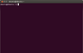

¿Demasiados conceptos?

Bentobox

Bentobox - Solución

PHP
Lógica. Lenguaje de programación.SaaS
Modelo de negocio. Software as a Service.RoR
Lógica. Ruby on Rails. Framework.HTML
Estilo y estructura. Lenguaje de marcado.MongoDB
Base de datos. NoSQL.Apache
Infraestructura. Software de servidor de código abierto.CSS
Estilo y estructura. Define la apariencia de la web.Django
Lógica. Framework. Equivalente a Rails para Python.MySQL
Base de datos. Sistema de base de datos de código abierto.Nginx
Infraestructura. Software de servidor de código abierto.
¿Qué necesitamos para empezar?

Ordenador
Con el entorno ya instalado. En este caso, la máquina virtual.

Editor de Texto
Sublime Text, Vim, Emacs y Gedit son ejemplos de editores de texto que se pueden usar para escribir código y editar archivos.
Terminal
Es el lugar donde se inicia el servidor de Rails y se ejecutan los comandos.

Navegador web
(Firefox, Safari, Chrome) para vizualizar la aplicación.
Aplicación «Ideas»
Empezaremos por algo fácil e iremos aumentando la complejidad.
Aplicación donde podamos anotar nuestras ideas y asociarles imágenes.
Idea: nombre, descripción e imagen.
Mockup

Arrancamos el servidor en local
-
Ejecutamos el servidor en local (nuestro ordenador):
-
Abrimos http://localhost:3000 en el navegador. Si vemos la página "Welcome aboard", todo ha ido bien.

-
Pulsamos CTRL-C en la terminal para salir del servidor.
/